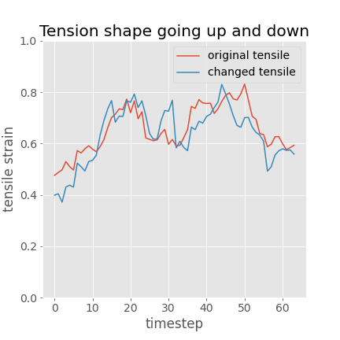

By exploring the the latent space, music tension can be changed to different shapes. Here the examples include the change of tensile strain and cloud diameter, which are both tension measures. Tensile strain shape is correlated with the harmony progression, and cloud diameter level change the total tension in the music
1. The original music sample generated by sampling the latent space
2. The music changed with tension strain going up
3. The music changed with tension strain going down
4. The music changed with tensile strain going up and down

5. The music changed with tensile strain going down and up
The music changed with a high cloud diameter level
The music changed with a low cloud diameter level
16 bar long music generation samples
Although this model can only output 4 bar long music, because the tension changed version sounds similar to the original ones, it can be used in a number of interesting ways.
The following example consists of 4 bar tension strain going up, 4 bar tension strain doing down, 4 bar tension strain going up and cloud dimeter high, and 4 bar tension strain going down and cloud diameter low. The seed music comes from sampling the latent space.